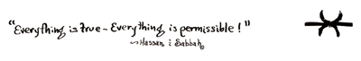

|
When the sisters heard this, they both confronted Void and pleaded that it not forget them, his First Born. And so Void decreed thus:
That this brother, having no form, was to reside with Aneris in Non-Being and then to leave her and, so that he might play with order and disorder, reside with Eris in Being. But Eris became filled with sorrow when She heard this and then began to weep.
"Why are you despondent?" demanded Void, "Your new brother will have his share with you." "But Void, Aneris and I have been arguing, and she will take him from me when she discovers him, and cause him to return to Non- Being." "I see,"replied Void, "Then I decree the following:
"When your brother leaves the residence of Being, he shall not reside again in Non-Being, but shall return to Me, Void, from whence he came. You girls may bicker as you wish, but My son is your Brother and We are all of Myself."
And so it is that we, as men, do not exist until we do; and then it is that we play with our world of existent things, and order and disorder them, and so it shall be that non-existence shall take us back from existence and that nameless spirituality shall return to Void, like a tired child home from a very wild circus.

|